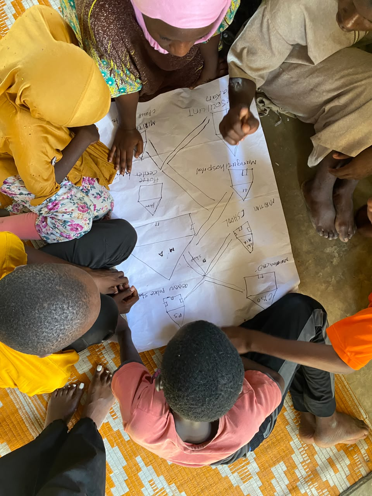
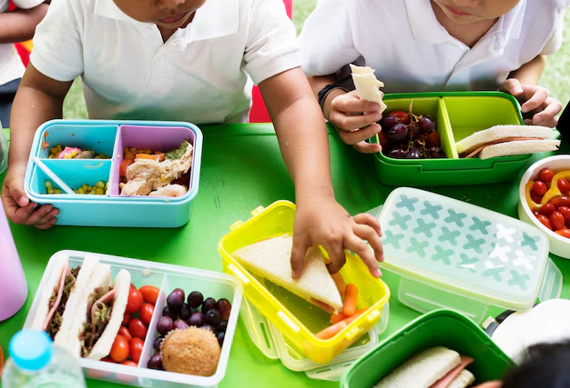
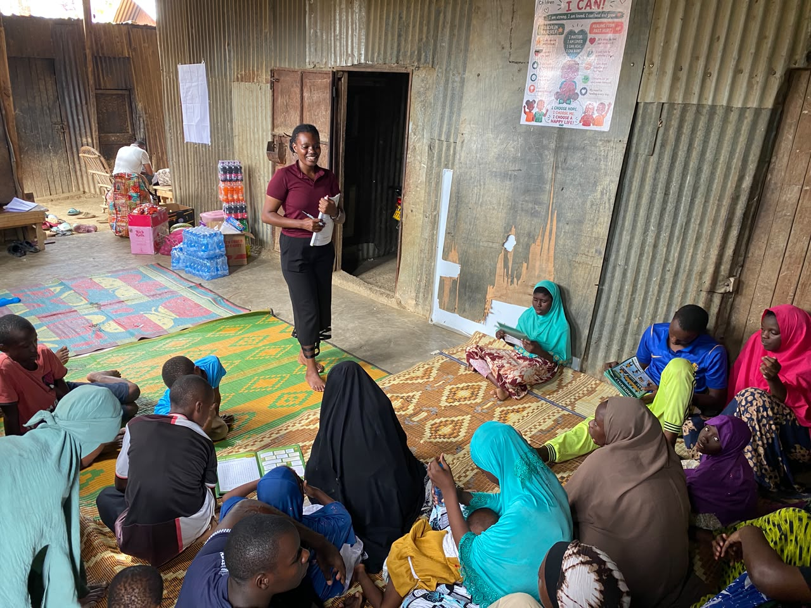
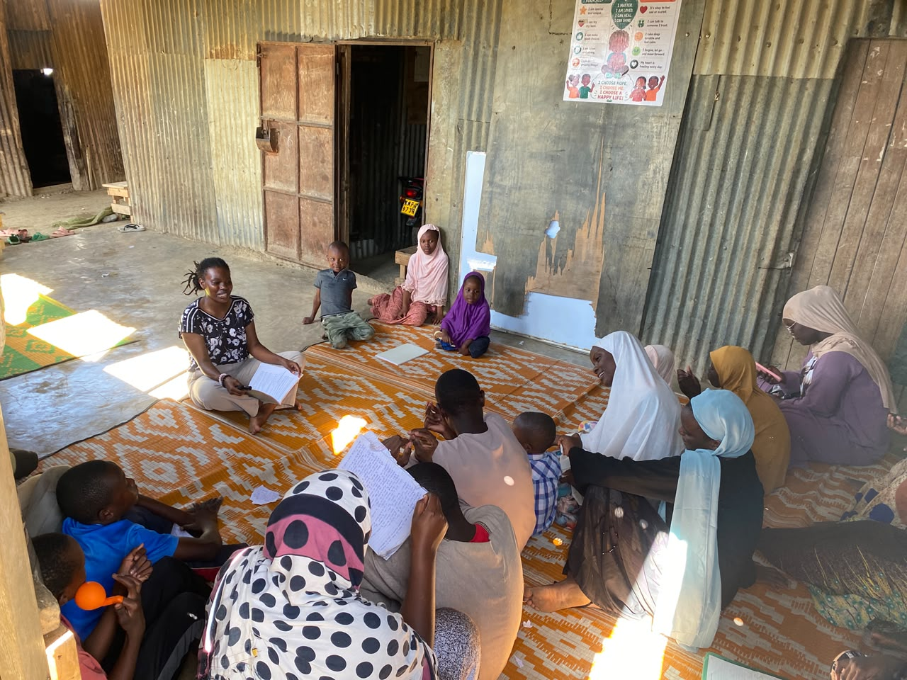
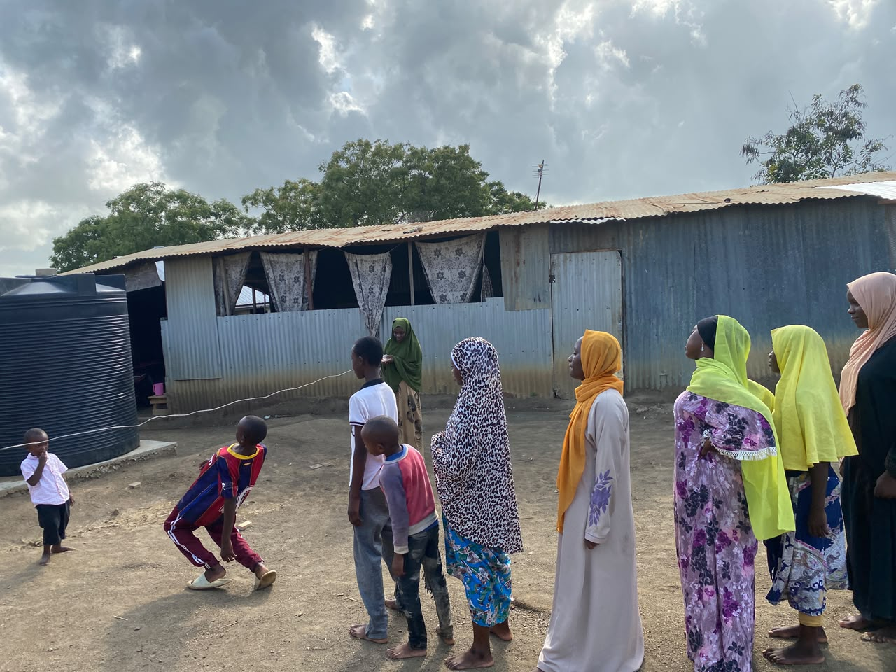
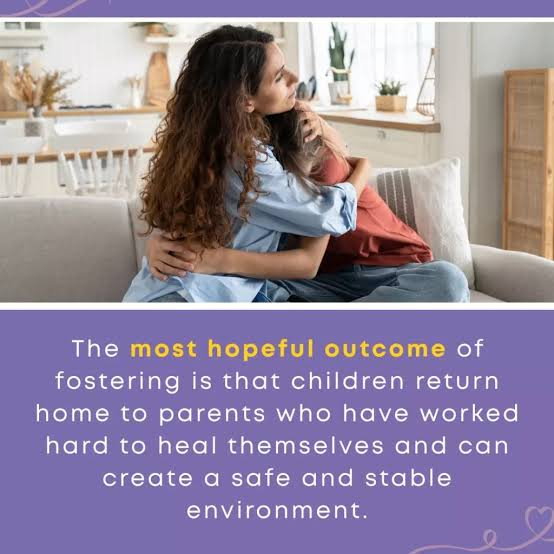

Our Approach to Care
Neema Children's Home provides integrated care for vulnerable children in Mikajuni, Jomvu Sub-county, Mombasa. Our work is built on the understanding that a child's wellbeing cannot be separated into isolated needs. Education, health, emotional stability, and family relationships are deeply connected, and progress in one area strengthens the others.
Each child in our care has an individual plan developed with our social workers, caregivers, and where possible, the child's own voice. That plan draws on our programmes as needed, at the pace and in the order that best serves the child. Our programmes are also extended to at-risk families in the surrounding community, because strengthening families is one of the most effective ways to protect children.
Child-Centred
Every decision begins with the child's safety, wellbeing, and long-term interests. Children are heard, respected, and involved in decisions that affect them.
Family-Focused
We work to preserve, strengthen, and where possible restore family connections, because children thrive best within safe and supported families.
Community-Based
We are rooted in the Jomvu community and partner with local schools, clinics, authorities, and leaders to deliver lasting change.
Programmes at a Glance
Our seven programmes are delivered in an integrated way, tailored to each child's needs and stage of development.
- Education School placement, materials, tutoring, and academic transitions from primary through tertiary level.
- Health and Nutrition Routine care, referrals, balanced meals, hygiene, and partnerships with local clinics.
- Counselling and Emotional Support Trauma-informed care, individual and group sessions, and referral pathways for specialist support.
- Mentorship and Life Skills Trusted adult mentors, life skills, and positive role models for every child.
- Skills Development Vocational and digital skills, financial literacy, and support toward independent living.
- Family Strengthening Support to at-risk households through guidance, counselling, and economic empowerment.
- Reintegration and Aftercare Careful family tracing, preparation, transition, and long-term follow-up where safe.

Education
Laying the foundation for lifelong opportunityEducation is one of the most powerful tools for breaking the cycle of poverty and instability. We ensure that every child in our care is enrolled in school, equipped with the materials they need, and supported to succeed both academically and socially.
Our team tracks each child's progress, works closely with teachers, and provides additional tutoring where needed, particularly during transitions between primary, secondary, and tertiary levels.
What We Provide
- School placement, fees, uniforms, and learning materials
- After-school tutoring and homework support
- Transition support between education levels
- Monitoring of attendance and academic progress
- Liaison with teachers, guardians, and education authorities
Every child in our care is enrolled in school and supported to remain there until they complete their education.
Focus: retention, progression, and academic confidence
Health and Nutrition
Building the physical foundation for growthA child cannot learn, play, or heal without good health. Our health and nutrition programme provides routine care at the home and coordinates with clinics, hospitals, and visiting medical volunteers for specialist needs.
We monitor each child's growth, nutrition, and general wellbeing, and we respond promptly to any health concerns that arise.
What We Provide
- Routine health check-ups and immunisations
- Balanced daily meals and nutrition support
- Hygiene education and supplies
- Referrals to partner clinics and hospitals
- Management and follow-up for ongoing conditions
Every child in our care has an up-to-date health record and access to the medical attention they need.
Focus: prevention, treatment, and sustained wellbeing
Counselling and Emotional Support
Healing from loss, trauma, and displacementMany children arrive at Neema having experienced loss, trauma, or neglect. Our counselling programme provides a safe and confidential space where children can process their experiences and begin to heal.
Support is delivered by trained counsellors and social workers, and where needed, we refer children to specialist mental health services.
What We Provide
- Individual counselling sessions tailored to each child
- Group therapy and peer support circles
- Trauma-informed care approaches
- Referral pathways for specialist mental health support
- Support for caregivers and siblings where relevant
Children are given the time, space, and skilled support they need to process their experiences and rebuild their sense of safety.
Focus: safety, healing, and emotional resilience
Mentorship and Life Skills
Consistent adult presence and guidanceEvery child is paired with a trusted adult mentor who offers guidance, encouragement, and a stable presence over time. Mentorship is one of the most effective ways to build confidence and life direction in young people.
Alongside mentoring relationships, we run life skills sessions that prepare children for the responsibilities and choices of adult life.
What We Provide
- One-on-one mentoring relationships with vetted adults
- Life skills sessions covering communication, decision-making, and relationships
- Career and education guidance
- Positive role models drawn from the local community
Children develop trusted relationships and practical life skills that will serve them long after they leave our care.
Focus: guidance, confidence, and life preparation
Skills Development
Preparing young people for independenceAs children grow older, practical skills become the bridge to independence. Our skills development programme equips teenagers and young adults with marketable trades and the confidence to build their own futures.
We offer training in practical fields and pair it with financial literacy and entrepreneurship basics, so that young people leave our care with real options.
What We Provide
- Vocational training in tailoring, crafts, and other trades
- Computer literacy and digital skills
- Arts, music, and creative expression
- Financial literacy and small business fundamentals
- Support to start income-generating activities
Young people leave Neema with practical skills, financial understanding, and the confidence to earn a living.
Focus: employability, enterprise, and self-reliance
Family Strengthening
Supporting families so children can stay homeChildren belong in families. Our family strengthening work supports vulnerable households in the Jomvu community so that children can remain at home, or return to a safe and stable environment whenever possible.
We work with parents, guardians, and extended family members to address the root causes of vulnerability and build lasting stability.
What We Provide
- Assessment of family situations and needs
- Parenting guidance and counselling
- Economic empowerment through small grants and income activities
- Linkages to community support services
- Ongoing follow-up and monitoring
Families are supported to provide safe, stable homes, reducing the need for children to be separated from their loved ones.
Focus: prevention, stability, and family preservation
Reintegration and Aftercare
Careful transitions back to family lifeWhere it is safe and in the child's best interest, we work to reunite children with their families or place them in stable, family-based care. Reintegration is a careful, staged process that prioritises the child's safety and long-term wellbeing.
Our work does not end when a child leaves the home. We follow up with children and families over time to ensure the transition holds.
What We Provide
- Family tracing and thorough assessment
- Preparation work with the child and family
- Gradual transition planning and supported placements
- Post-placement follow-up and aftercare
- Coordination with local authorities and social services
Where reintegration is possible, children return to safe, supported families with ongoing follow-up from our team.
Focus: safety, permanence, and long-term follow-upOur Approach in Practice
Four principles shape how we deliver every programme at Neema.
Child-Centred
Every decision begins with the child's safety, wellbeing, and long-term interests. Children are heard, respected, and involved.
Family-Focused
We preserve, strengthen, and where possible restore family connections, because children thrive best in safe families.
Integrated
Our programmes are coordinated so that education, health, and emotional support reinforce one another.
Accountable
We track outcomes, report to our board and partners, and continuously improve how we deliver care.
Support the Work
You can direct your gift to a specific programme or give where it is most needed. Every contribution strengthens a child's future.